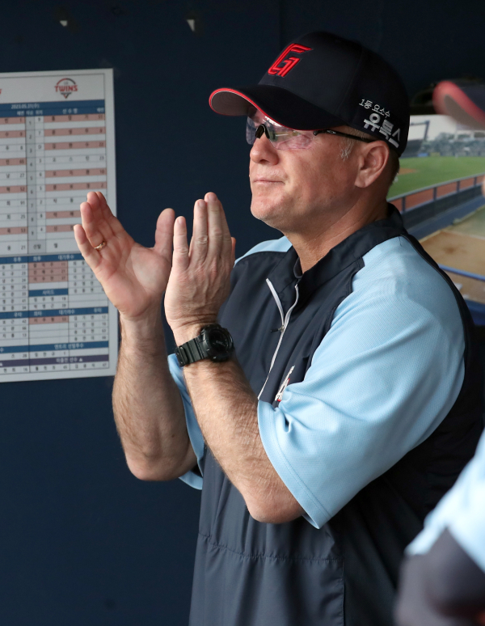

롯데는 전날 KT전을 이종운 수석코치의 감독대행 체제로 치렀다. 롯데 구단은 "서튼 감독이 야구장 출근 후 건강상의 이유로 바로 귀가했다"고 사유를 설명한 바 있다. 당시 서튼 감독은 구단에 사퇴 의사를 전달하고, 몇몇 선수들과 작별 인사를 나눈 것으로 전해졌다.
올 시즌을 앞두고 롯데는 모그룹으로부터 받은 유상증자 190억원을 FA(자유계약선수) 영입 등에 썼다. 그러나 6년 만의 포스트시즌(PS) 진출 도전에 빨간불이 켜졌다. 정규시즌 개막 첫 달인 4월을 1위로 통과하고 6월 초까지 LG 트윈스-SSG 랜더스와 3강 체제를 형성했다.
성적이 부진할수록 서튼 감독은 고립됐다. 앞선 2년 동안에는 1군 벤치에 외국인 코치가 3명씩 있었다. 올해는 외국인 코치들이 떠났고, 국내 코치진이 대거 영입됐다. 또한 서튼 감독은 성민규 롯데 단장과 야구 철학을 공유해 왔지만, 올 시즌엔 분위기가 달라졌다. 지난 6월에는 배영수 투수 코치가 2군으로 내려가면서 내홍까지 수면 위로 드러났다. 이때부터 서튼 감독 리더십에 대한 의구심이 고개를 들었다. 결국 서튼 감독은 잔여 임기를 채우지 않고 지휘봉을 내려놓기로 결정했다. 양상문, 허문회에 이어 서튼까지 3명의 롯데 감독이 연이어 계약 기간을 채우지 못하고 떠났다. 2015년 1군 지휘봉을 잡았던 이종운 수석 코치가 잔여 시즌 감독대행을 맡아 롯데를 이끌 예정이다.
